A boho Christmas goes wrong in one predictable way. Everything is cream, tan and oatmeal, and by the second week the room reads as flat rather than calm.
The cure is not more color. It is more texture, one real green, warm light and a single dark or metallic note to give the eye something to land on.
These 31 ideas are sorted by where they go, from the tree to the bedroom. The rules come first, because they are what make the neutrals work.
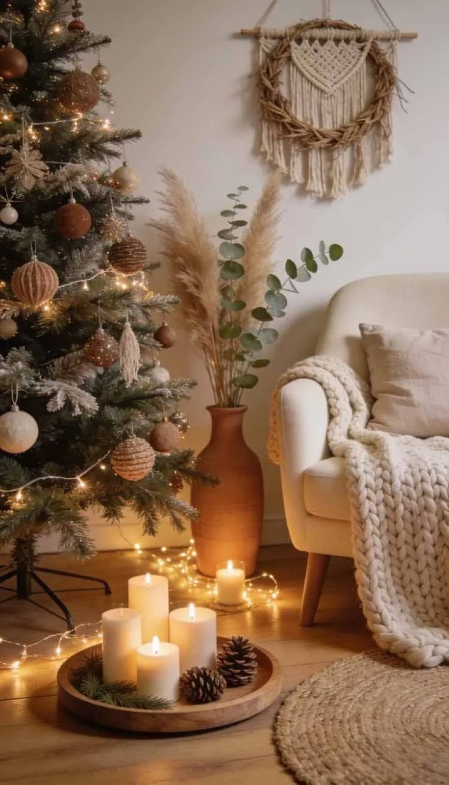
Five Rules for a Boho Christmas That Feels Warm
- Three colors, then stop. Cream, tan and one muted green or rust is a full palette. A fourth color is where boho turns into clutter.
- Count your textures before your ornaments. Knit, rattan, raw wood, jute and linen are what make a neutral room look rich. Aim for at least three in every view.
- Buy warm white and nothing else. Look for 2700K on the box. Cool white bulbs turn pampas and cream knits a sickly blue.
- Treat dried stems before they come indoors. Shake pampas and dried flowers outside, then mist them with unscented hairspray from a foot away so they shed less.
- Keep flame a foot away from fiber. Macrame, pampas, cotton stems and dried oranges all catch fast. Use flameless candles near them, or keep 12 inches of clear air.
Trees and What Goes Under Them
1. Stand the Tree in a Basket, Not on a Skirt
A tree skirt is a flat circle of fabric that collects needles. A basket hides the stand and looks like a piece of furniture the rest of the year.
Measure the stand first and buy a basket 24 to 28 inches across, so there is room to tighten the bolts. The feather-flocked tree here sits in a round rattan basket beside a sunburst mirror, and the copper balls are the only shiny thing in the room.
Feather stems droop on their own. Wrap each one to a branch with green floral wire, and vacuum around the base weekly, because flocking sheds.
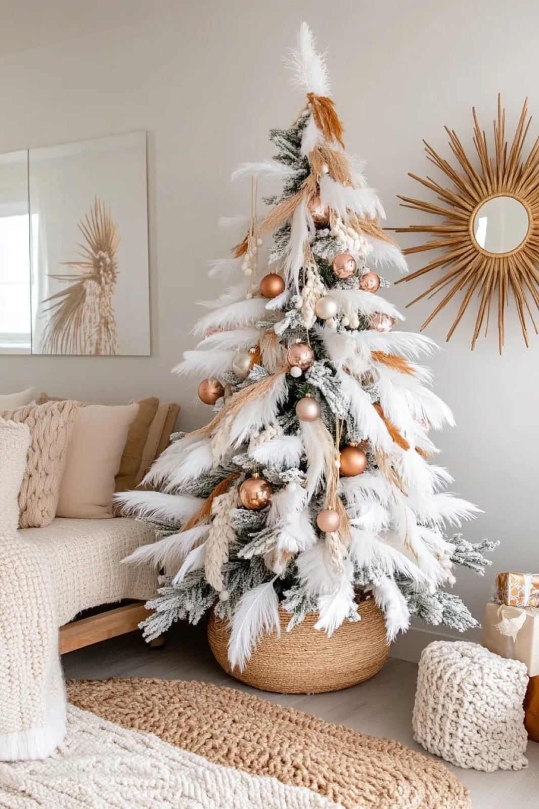
2. Light a White Tree Like a Warm One
A flocked tree looks cold under the wrong bulbs. That is a lighting problem, not a tree problem.
Use 2700K warm white and plan on roughly 100 lights per foot of height, so a seven-foot tree gets 700. Keep the ornaments to white, cream and gold, as in this cream living room, and let the woven gift baskets and the jute rug supply the texture.
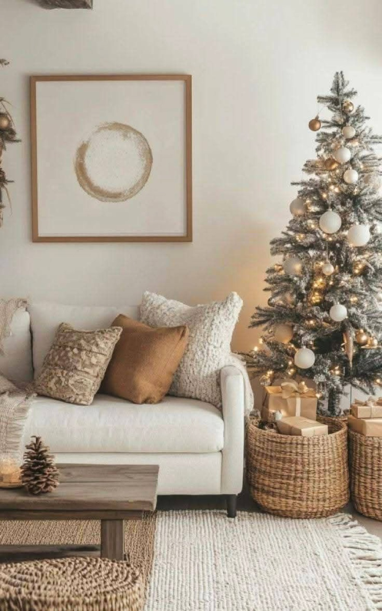
3. Put the Gifts in Baskets
Wrapped boxes piled on the floor look messy by the third day. Two baskets keep the pile contained and give you a place to stash gifts as they arrive.
Choose round baskets 18 to 20 inches wide, and put the largest boxes at the back so the small ones show.
Two papers and one twine are enough. In this photo the boxes are white and sage with jute bows, and nothing fights the greenery.
A white faux fur mat under the baskets softens the floor and catches needles. Shake it outside rather than vacuuming it, or the pile mats.
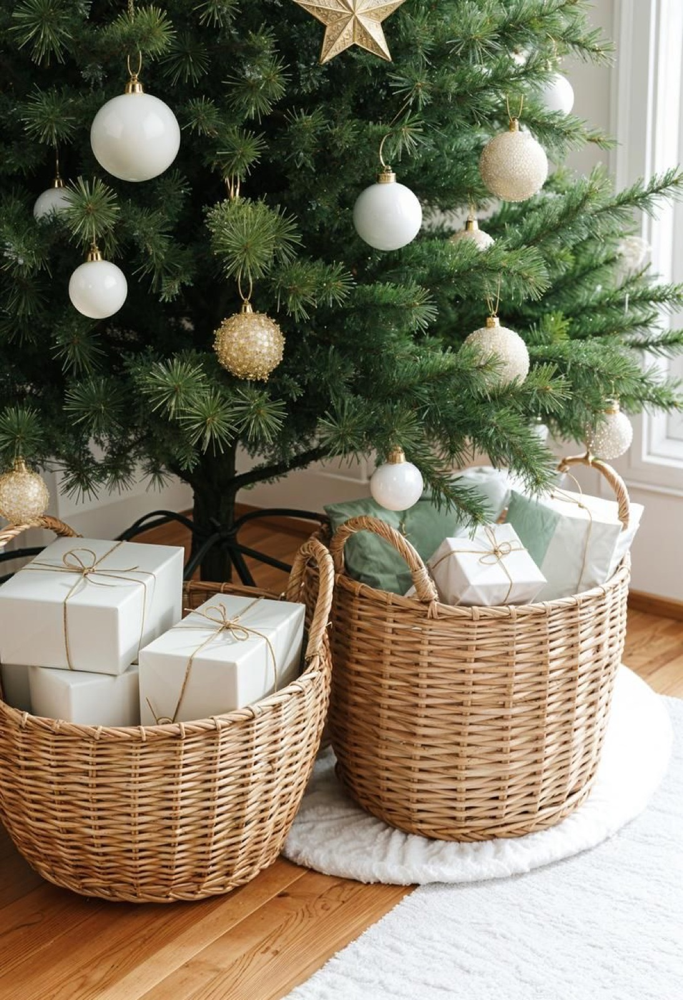
Large Woven Basket with Handle, Set of 3
Shop on AmazonWhite Faux Fur Tree Skirt, 48 in
Shop on Amazon4. Decorate the Whole Tree in One Material
The easiest tree to get right is a one-material tree. Here every ornament is cream macrame or raw wood bead, and the pampas plumes at the top are the only flourish.
Hang the heavier pieces close to the trunk and the lightest at the branch tips, and space identical shapes a hand's width apart so the repeat reads as a pattern instead of a clump.
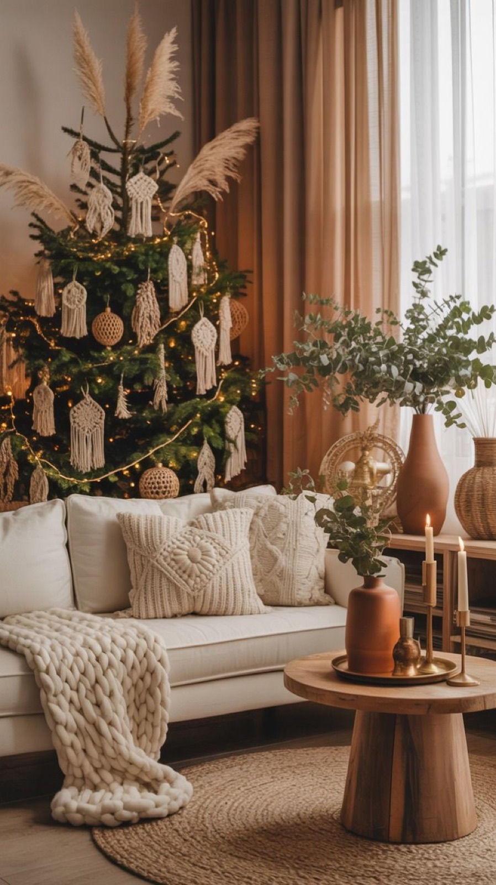
5. Light the Floor, Not Just the Tree
Most rooms are lit from the ceiling and the tree. Add a third light source at ankle height and the whole room glows.
This corner does it with a wood tray of pillar candles on the floor beside the tree, under a macrame hoop and a terracotta vase of pampas and eucalyptus.
If there are children or pets, swap the pillars for LED versions with a timer. The light is the point, not the flame.

Mantels, Garlands and Stockings
6. Build the Mantel in Three Rows
A mantel looks decorated when it has depth, not when it has more stuff. Think in three rows, front to back.
Greenery hangs along the front edge. Medium pieces, such as the small wooden houses here, sit in the middle. One tall thing, this pampas in a patterned vase, goes at the back.
The white brick fireplace in this photo keeps the palette to cream, sage and wood, and the whole thing could go up in ten minutes.
If you want a candle on a mantel with greenery, make it an LED pillar. Eucalyptus garlands are usually silk and they melt.
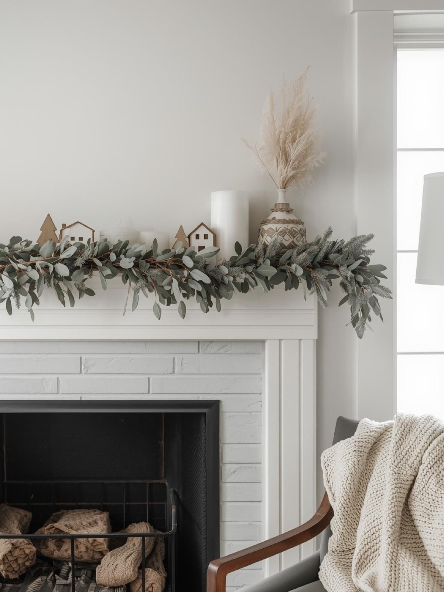
7. Drape a Bead Garland, Do Not Stretch It
A wood bead garland pulled tight across a mantel looks like a rope. Let it hang in a loose swag, with the lowest point about a third of the way along, and hang a second strand below it as this white mantel does.
Hang from small cup hooks or clear pushpins under the mantel lip, not tape, and tie them to the greenery behind so the swag cannot slide.
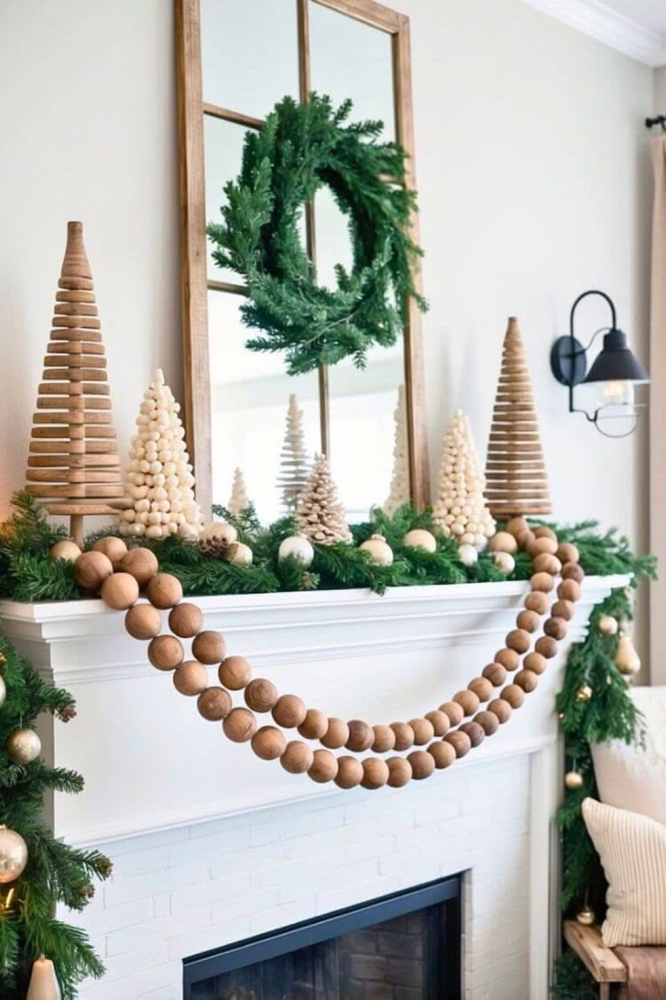
Wood Bead Christmas Garland, 3 pc
Shop on Amazon8. Tie Linen Between the Beads
Beads alone can look a little hard. Soft ribbon between the strands fixes that.
Tear linen into strips about two inches wide so the edges fray, then knot them loosely between the bead strands. The taupe strips on this mantel hang in long tails, and a few pinecones behind them add depth.
Tear, do not cut. Scissors leave a straight edge that looks like packaging.
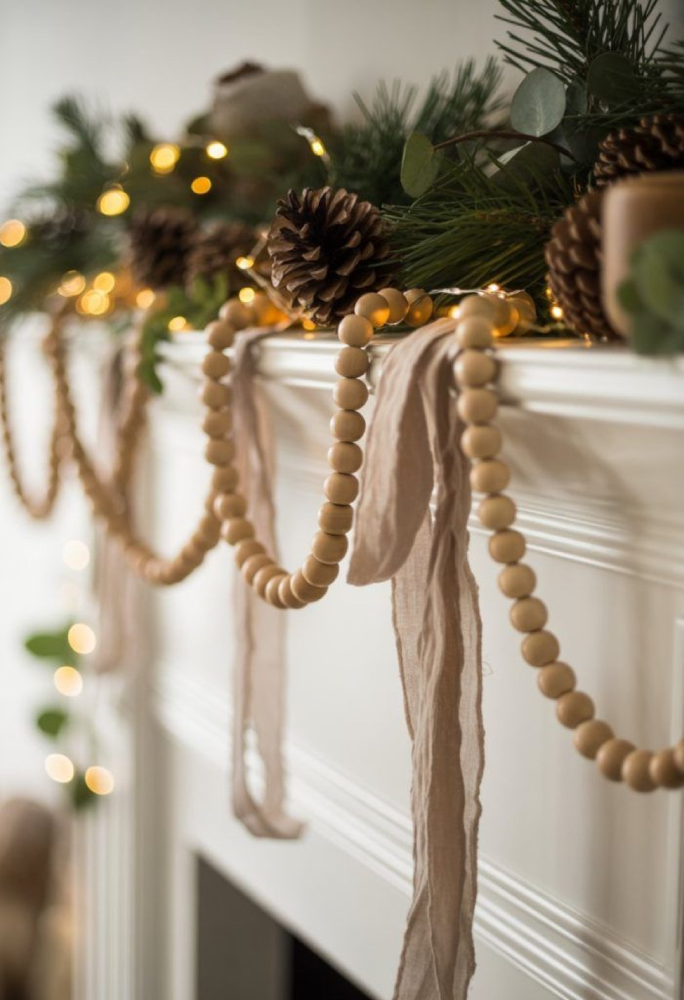
Natural Wood Bead Garland, 3 Pack
Shop on Amazon9. Keep Tapers Away From the Pampas
Pampas plumes are the fastest-burning thing on a mantel. If you want real candles near them, the gap matters more than the look.
Keep lit tapers at least 12 inches from any plume, and trim the wicks to a quarter inch so the flame stays short. Or use LED tapers, which now flicker convincingly.
This white brick mantel layers a cedar garland with pampas and a few red berries at one end, and three brass tapers stand clear of the greenery on the far side.
Hang the wreath on the mirror with a ribbon over the top edge, not a hook in the frame.
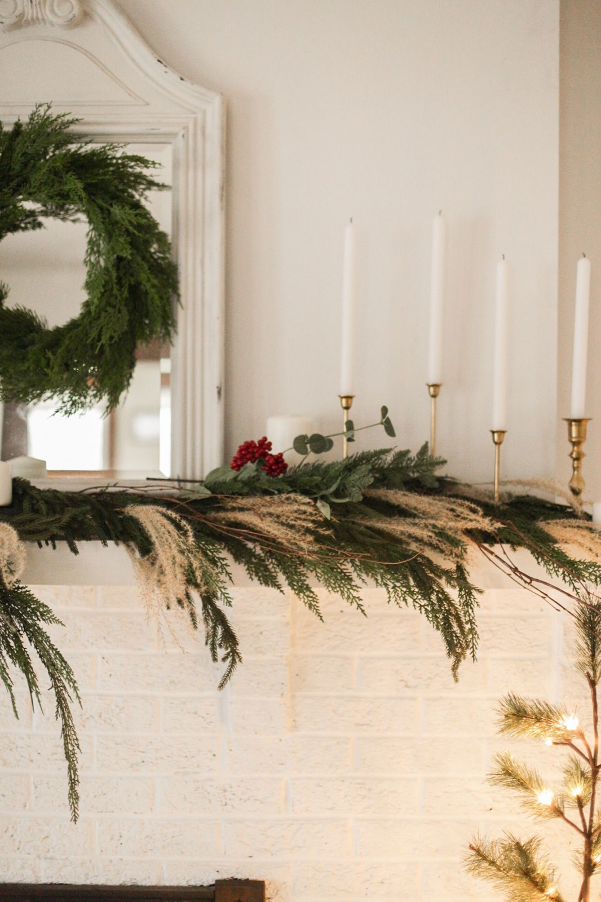
10. Wire the Oranges In, Never Glue Them
Hot glue leaves marks on a garland you want to use again. Push a floral wire through each dried orange slice and twist it onto a branch instead.
Add cinnamon bundles tied with twine, as this pine garland does, and the mantel smells like the season for weeks.
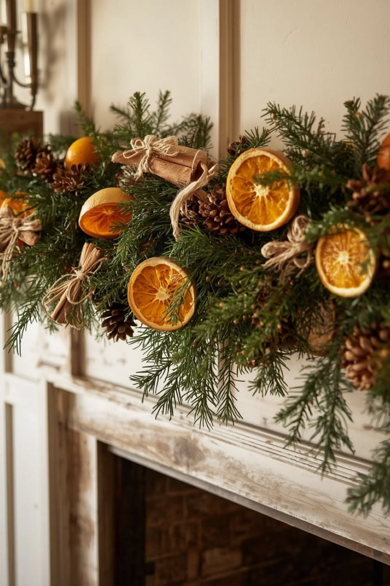
11. Hang Macrame Fringe Only Over a Cold Fireplace
A cream macrame fringe along a wood mantel is one of the prettiest boho touches, and cotton cord is also one of the most flammable.
Hang it over an electric insert, or only during weeks when you will not light a fire. If you do burn logs, use a screen and keep a foot of clear air between the top of the firebox and the fringe.
A jute rug and a basket or two in front finish the scene without adding anything else that burns.
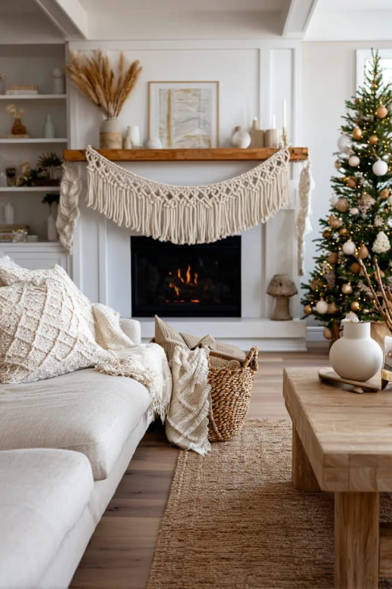
12. Check the Hook Rating Before You Fill the Stockings
An empty knit stocking weighs nothing. A full one can weigh five pounds, and adhesive hooks let go overnight.
Use mantel hooks or weighted holders rated for at least five pounds. Tie wooden letters on with twine, as these cream and taupe cable-knit stockings do, so the letters come off before the stockings go in the wash.
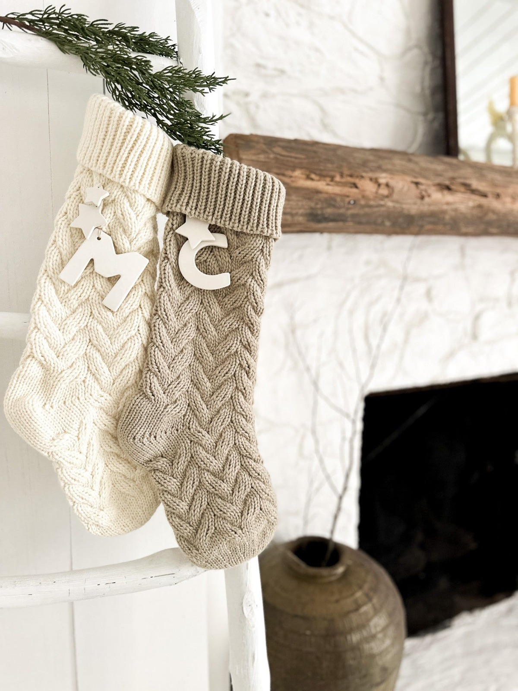
Wood Alphabet Letters, 4 in, 52 pc
Shop on AmazonCable Knit Christmas Stockings, 4-Pack
Shop on AmazonHandmade Ornaments in Cord, Yarn and Wood
13. Dry Orange Slices Low and Slow
Thick slices never dry. Cut them a quarter inch thick, blot both sides and bake at 200°F for three to four hours, flipping once.
Thread a wooden bead above each slice on twine, as this tree does, and the bead keeps the slice from spinning.
They last one season and smell like oranges the whole time. Store them in a dry box with the lid off for a day before you seal it.
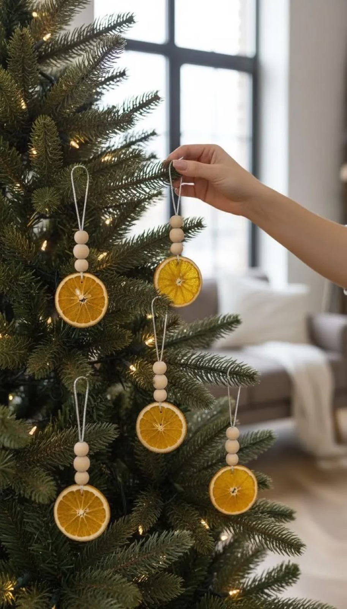
14. Crochet Over a Ball You Already Own
Shaping a crocheted sphere from scratch is slow. Crocheting a cover over a plain ball skips the hard part.
Use worsted cotton, which holds its shape better than acrylic, and single crochet around a three-inch foam or plastic ball until it closes at the cap.
Finish with a jute bow and a pine sprig under the cap, as these three do.
Burgundy, sage and cream is a safe trio. One dark ball in the set is what stops the tree looking washed out.
15. Starch Crochet Stars So They Hold a Point
Soft crochet droops on a branch. Brush both sides with equal parts white glue and water, then pin the points out on a board and let the star dry flat overnight.
Add a wooden bead to the hanging loop, as these cream and tan stars have, and hang them next to gold balls so the matte and shiny play off each other.
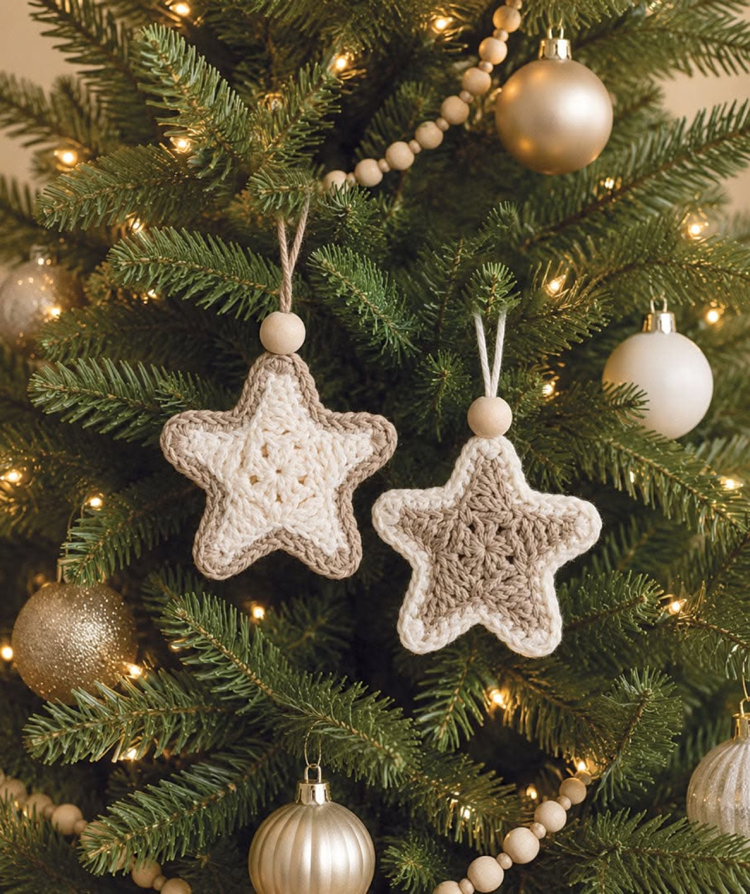
Wood Bead Christmas Garland, 3 pc
Shop on Amazon16. Make a Macrame Angel From One Cord
An angel needs three parts: a bead for the head, a knotted band for the wings and a long fringe for the skirt. Make them separately and join them at the neck.
Use 3mm cotton cord so the knots are large enough to see. Comb the skirt out with a pet slicker brush for the fluffy finish in this photo, then wrap a few turns of gold thread at the waist.
The skirt here hangs about as long as the wings are wide. Keep that ratio and the angel will not look top-heavy.
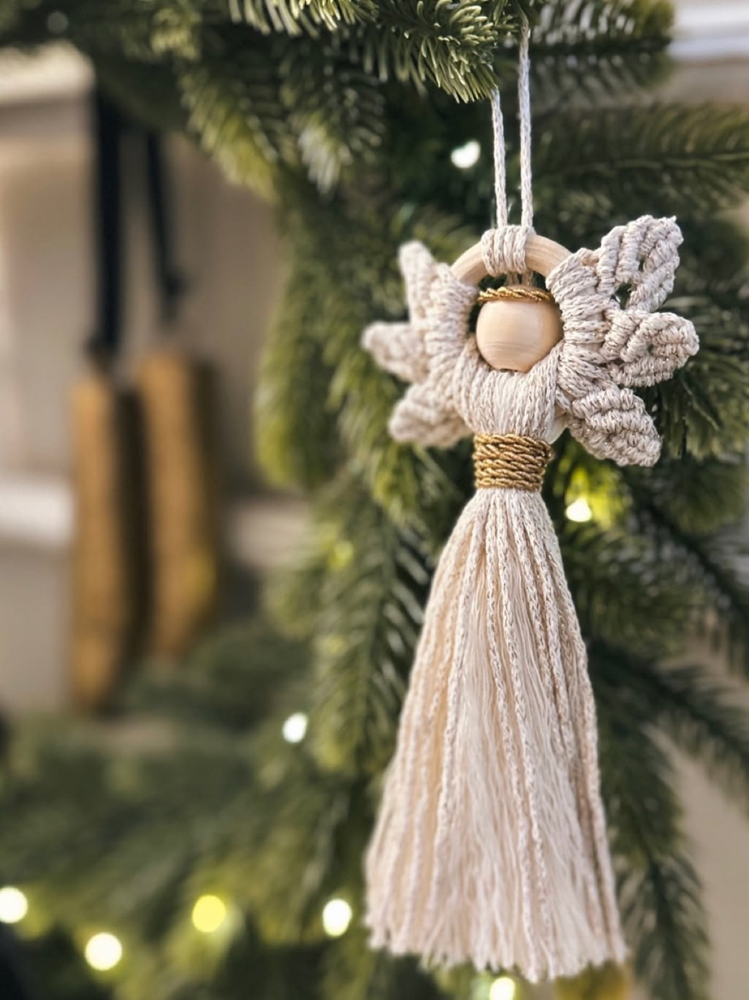
17. Hang Macrame Trees From a Branch
Three small macrame trees need a stage. Here they hang from a bare branch with pinecones and pine tucked along it, which is a finished look for the cost of a walk outside.
Keep the set to sage, cream and rust, as these are, and stiffen the top point of each tree with a dab of white glue so it stays sharp. A wooden star on each hanging loop finishes it.
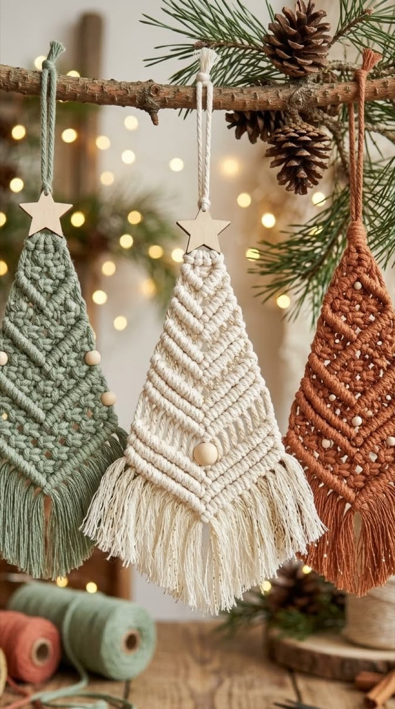
Macrame Christmas Trees, Set of 3
Shop on Amazon18. Bind Twig Stars With Wire, Then Glue
Twig stars fall apart at the joints. Wrap each crossing with thin floral wire first, then add a dot of hot glue to lock it.
Five twigs of the same length make the cleanest star. Grapevine bends more easily than dry sticks.
The ribbon beside these stars matters as much as the stars. Wired burlap ribbon holds a curve, and plain burlap sags by the second day.
Tuck a few real pinecones into the same branches, and the brown of the twigs stops looking lonely.
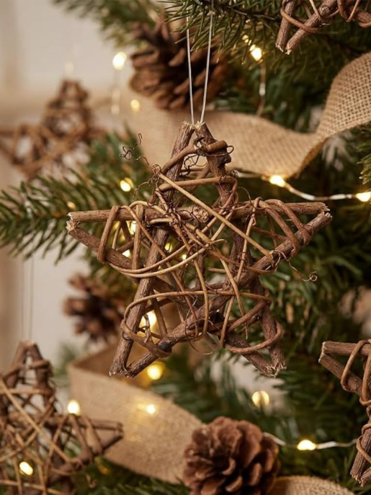
19. Put the Second Tree on the Wall
In an apartment, a tree-shaped wall hanging gives you a second tree without a second floor space.
A macrame tree weighs almost nothing, so one small removable hook at about 60 inches off the floor holds it. Choose a deep green, as this one is, so it reads clearly against a warm wall.
Wooden stars tied into the knots and a wooden dowel at the base are all the ornament it needs.
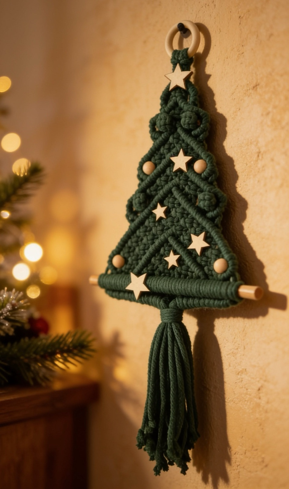
Pampas, Dried Stems and Wreaths
20. Size the Pampas to the Vase
Short plumes in a floor vase look like they are drowning. For a basket this tall, buy stems 36 to 48 inches long so the heads clear the rim by at least a foot.
Shake them outside, mist with unscented hairspray, and keep them out of a draft. The sheer curtains beside this one are fine, but a vent underneath would scatter fluff daily.
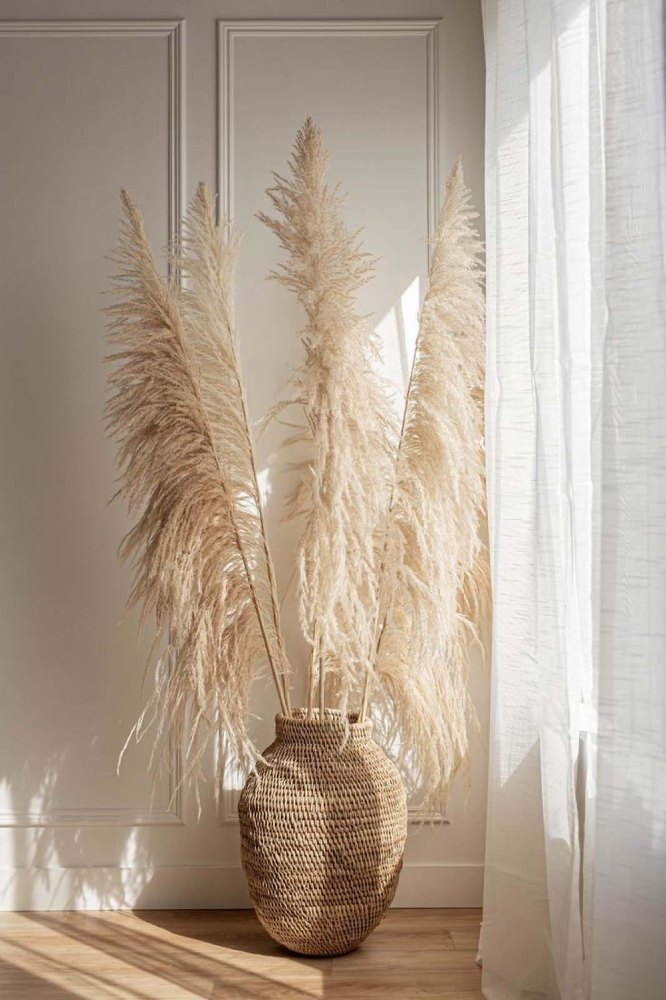
Tall Dried Pampas Grass, 48 in, 9 Stems
Shop on Amazon21. Decorate One Side of the Hoop
A hoop wreath covered all the way round is just a wreath. Leave most of the metal bare and the hoop becomes part of the design.
Use a 12 to 14 inch gold hoop and wire a cluster of pampas, cotton stems and a little pine to the lower left only, as this one is.
Hang it on jute twine at eye level. In a window, as here, the light comes through the pampas and the whole thing glows in the afternoon.
Cotton bolls are brittle. Wire them by the stem, never by the boll, and they stay whole.
Gold Metal Floral Hoop, 16 in, 2 Pack
Shop on AmazonDried Cotton Stems, 15 in, 10 Pack
Shop on Amazon22. Keep the Flames Below the Plumes
A candle cluster next to pampas works if the flame is always lower than the lowest plume. Here five votives sit on the table and the pampas rises well above them in a tall white vase.
Vary the glass. Mix two smooth holders with three cut or textured ones, and the group looks collected instead of bought in one box.
Trim every wick to a quarter inch. A long wick throws a taller flame, which is exactly what you do not want near dried stems.
Clear Glass Votive Candle Holders
Shop on AmazonWhite Pillar Candles, Unscented, 6-Pack
Shop on Amazon23. Wrap a Cardboard Star in Twine
Cut a star from thick cardboard, wrap it tightly in jute twine, and glue the loose end on the back. Ten minutes, and it looks like a shop piece.
Tuck in a spray of pine and two or three pearl balls at one point, as this one has, and stand it on a shelf rather than hanging it, so the weight of the greenery does not tip it.
Natural Jute Star Ornaments, Set of 2
Shop on AmazonFaux Pine Picks with Berries, 8 Pack
Shop on AmazonTables, Counters and Shelves
24. Leave Room for the Plates
A runner that is too wide pushes the place settings off the table. Keep a eucalyptus runner to about 14 inches, and the rattan chargers sit beside it with room to spare.
Tapers in brass holders along the runner give height without blocking anyone. Two macrame hangings on the wall behind, as in this dining room, pull the texture up off the table.
Faux eucalyptus is the right choice here. Real stems wilt in a warm room before dessert.
Rattan Charger Plates, Set of 4
Shop on AmazonFaux Eucalyptus Garland, 6 ft, 2 Pack
Shop on Amazon25. Build Each Setting on a Jute Round
Round jute placemats soften a long wood table. Use 15-inch mats, stack a dinner plate and a salad plate, and lay gold flatware beside them, as this setting does with small paper cone trees down the center.
Gold flatware is hand-wash only. The dishwasher dulls the finish within a season.
Round Jute Placemats, Set of 6
Shop on AmazonMatte Gold Flatware Set for 4, 20-Piece
Shop on Amazon26. Raise the Sign on a Cake Stand
A sign flat on the counter disappears behind the fruit bowl. Lift it on a cake stand and it reads from across the kitchen.
Wrap the stand in a strip of faux fur, set the sign on top, and fill a wood tray underneath with pinecones and a string of fairy lights, as this counter does.
Use battery lights with a six-hour timer. Nothing should trail a cord across a surface where you cook.
Keep this arrangement away from the stove. Faux fur and pinecones both scorch.
Round Rustic Wood Serving Tray, 17 Inch
Shop on AmazonMerry Christmas Wooden Table Sign
Shop on Amazon27. Light Ceramic Houses From Inside, With LEDs Only
A real tealight inside a ceramic house heats the glaze and can crack it. Use flickering LED tealights and the windows still glow.
Group three houses of different heights on a frosted garland, as here, and leave a few inches between them so each roofline shows.
Wipe the glaze with a dry cloth before packing, and store them in the box they came in.
Lighted Ceramic Christmas Village Set
Shop on AmazonFrosted Pine Garland, 5 ft
Shop on Amazon28. Keep a Shelf Village Light
A floating shelf holds a village only if it is anchored into studs and the pieces are small. Wood trees, two lit houses and one candle, as on this shelf, is about the right total.
Tallest tree at the back, houses in front, and a macrame hanging above to fill the wall. A pot of greenery on the floor below stops the shelf floating in space.
Distressed White Wooden Christmas Trees, Set of 2
Shop on AmazonRustic Floating Shelves, Set of 2
Shop on AmazonSofas, Beds and Cozy Corners
29. Swap the Covers, Keep the Pillows
You do not need new pillows for Christmas. You need new covers in three textures and one color family.
This sofa mixes a chunky cable knit, a flat button-front knit and a ribbed cover, all in oatmeal and sand, with a soft throw folded over the arm.
Buy covers one size smaller than the insert. An 18-inch cover on a 20-inch insert looks full instead of flat.
Wash knit covers cold and dry them flat. A tumble dryer shrinks a chunky knit by a size.
Cream Chunky Knit Pillow Cover, 18x18
Shop on AmazonChunky Knit Throw Blanket, 50x60
Shop on Amazon30. Pick a Bedroom Tree You Can Lift
A bedroom tree should be small enough to carry out alone. A three to four foot flocked tree in a wicker basket with a battery light string, as this one has, means no cord across the floor to trip on at night.
Hang a eucalyptus garland across the headboard with removable hooks rated for light loads. Garland weight is low, but a hook that fails at 2 a.m. is still a hook that fails.
Keep the bedding white and the throw tan, and the tree becomes the only decoration the room needs.
Faux Silk Eucalyptus Garland, 6 ft, 2 Pack
Shop on AmazonPre-Lit Flocked Mini Christmas Tree, 24 Inch
Shop on Amazon31. Give the Blanket a Bench
A chunky knit on the bed ends up on the floor by morning. A bench at the foot of the bed gives it a home, and a second folded throw on the bench itself warms the look.
Run a wood bead and pine garland along the top of the headboard, as this room does, and anchor the bench with a jute rug so the whole corner reads as one piece.
Wooden Bead Christmas Garland, 6.5 ft
Shop on AmazonChunky Knit Throw Blanket, 50x60
Shop on AmazonCommon Mistakes (and Fixes)
- Mistake: a room that is only cream and beige. Fix: add one green, one dark wood tone and one metallic, such as brass tapers or copper balls, so the eye has somewhere to land.
- Mistake: pampas fluff all over the floor. Fix: shake the stems outside, mist with unscented hairspray, and keep them away from heating vents and fans.
- Mistake: real candles beside macrame or dried flowers. Fix: switch to flameless candles, or keep a 12-inch gap and trim wicks to a quarter inch.
- Mistake: full stockings on adhesive hooks. Fix: use mantel hooks or weighted holders rated for at least five pounds, and test them with the stockings filled.
- Mistake: orange slices that stay sticky or turn brown. Fix: slice at a quarter inch, blot, and bake at 200°F for three to four hours, flipping once.
Where to Start
Nobody needs all 31 of these in one house. Choose one tree treatment, one mantel idea and one handmade ornament, and repeat the same three colors through all of them.
If you make a single thing this year, make the orange slices. They cost almost nothing, they scent the room, and they look right on the tree, the mantel and the table.